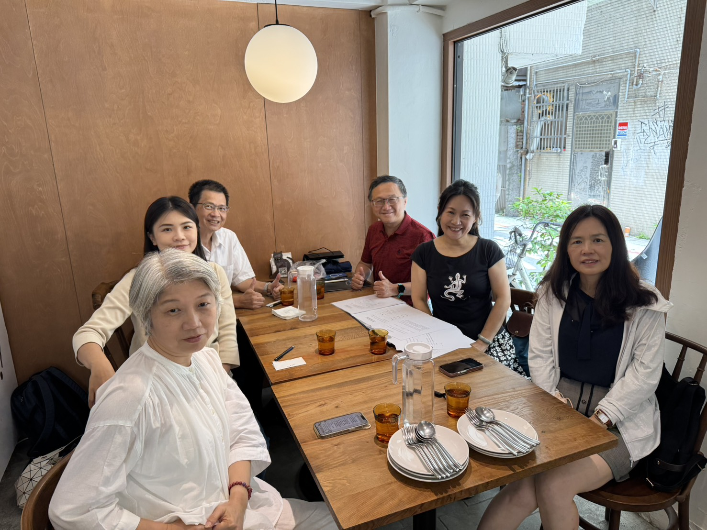

關於偵脈科技
關於我們
PECURA 的產品旨在用於周邊動脈疾病（PAD）的早期篩檢與長期監測， 透過四肢夾具同步量測 PPG 與 ECG 訊號，在約一分鐘內提供臨床級血管硬化指標與周邊血管風險評估。
我們以「可攜、無壓脈帶、低操作門檻」為核心，結合抗移動干擾訊號處理、AI 分析與雲端趨勢追蹤， 讓血管健康管理從醫院延伸至診所、長照中心、藥局、遠距與居家場域。
一分鐘檢測
快速給出血管硬化與周邊風險指標
跨場域導入
診所、長照、藥局、遠距與居家
雲端追蹤
趨勢追蹤與預警，支援長期監測
臨床導向
以臨床流程與可用性為設計優先


公司願景
偵脈科技是一家專注於非侵入式智慧血管監測系統開發的醫療科技公司，致力於以創新感測技術、 AI分析與雲端健康管理平台，打造更快速、準確且易於使用的血管健康評估工具。我們相信，血管疾病的預防不應只發生在症狀出現之後， 而應從日常監測、早期示警與長期追蹤開始，讓高風險族群能更早掌握自身健康變化，也協助醫療與照護場域提升篩檢效率與照護品質。
我們的願景，是讓血管健康管理走出大型醫療院所，延伸至基層診所、長照機構、藥局、健檢中心與居家照護場域，透過簡便、 舒適且具可近性的量測方式，降低檢測門檻，讓更多人能及早發現潛在風險。偵脈科技將持續整合臨床需求、工程技術與數據智慧， 推動血管健康照護從單次檢測邁向連續追蹤，從被動治療邁向主動預防。
未來，偵脈科技將以「智慧、友善、可信賴」為核心價值，持續開發符合臨床標準與市場需求的創新解決方案，建立連結醫師、 照護者與使用者的智慧血管照護生態系，朝向成為全球智慧血管健康管理領導品牌邁進。
董事長的話
面對高齡化社會與慢性疾病管理需求快速增加的今天，我們深信醫療科技的價值，不只是技術創新，更在於改善人們的健康品質與生活未來。
偵脈科技自成立以來，始終秉持「創新」、「精準」、「關懷」的核心理念，致力於智慧血管監測與非侵入式醫療技術的研發，期望透過科技力量，提供更即時、更便利、更有效率的健康照護方案，讓醫療檢測走向智慧化、普及化與日常化。
我們深知每一次技術突破的背後都來自專業團隊的投入、合作伙伴的支持以及市場與社會的信任。因此我們將持續深化研發能量，結合臨床需求與國際趨勢，打造具有全球競爭力的智慧醫療品牌，並積極推動台灣生醫科技邁向國際舞台。
未來我將與全體團隊攜手前行，以誠信經營為根基，以創新研發為動能，以守護人類健康為使命，持續創造企業價值與社會價值，共同迎向智慧健康新時代。


鳳凰平台年會

偵脈科技成立

Bio Asia 亞洲生技展

日本東北大學交流

開幕茶會

成大 Demo Day

醫療科技展